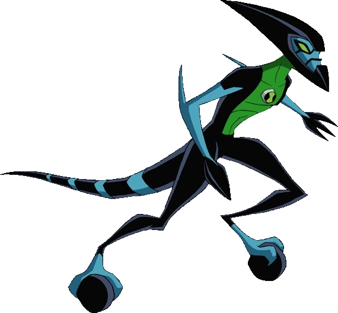
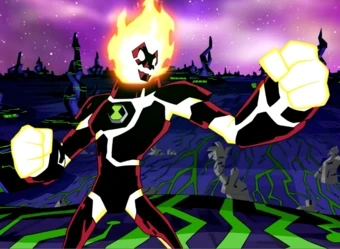
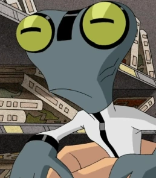
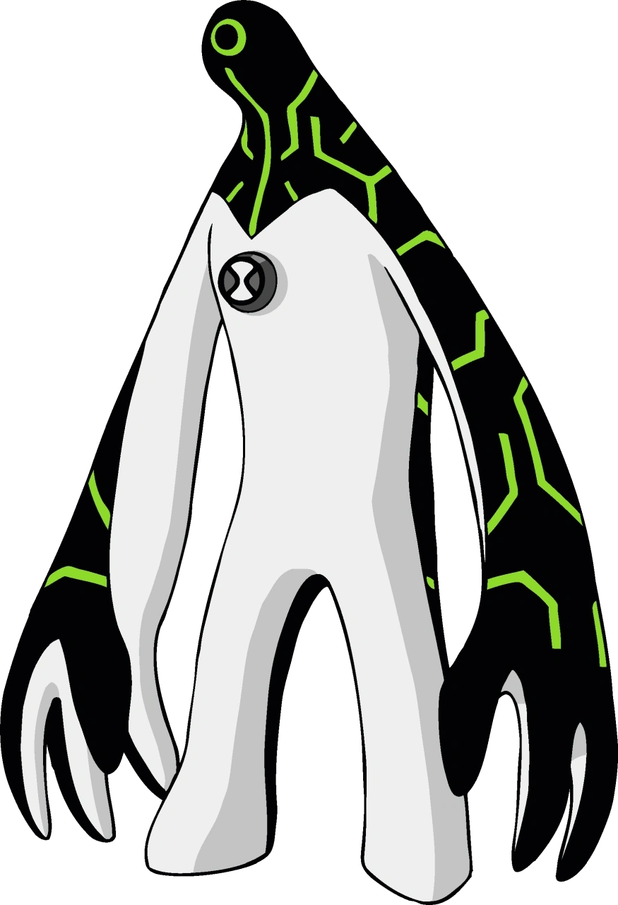
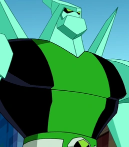
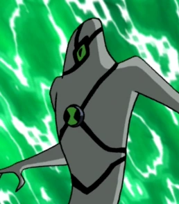
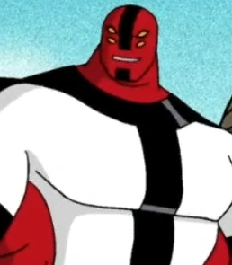
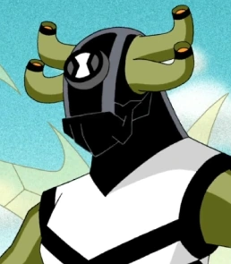
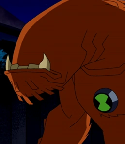
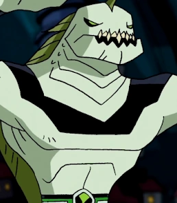

1º XLR8
XLR8 lembra um Velociraptor semi-blindado. Alienígena esbelto, com braços finos que possuem três garras em cada mão, e duas garras nos pés por cima de bolas pretas que as usa quando corre, além de dar suporte as suas longas pernas.
WIKI

2º Chama
Chama é uma forma de vida humanoide baseada em plasma. 2 metros de altura, Seu corpo é constituído por um interior de magma brilhante coberta por um vermelho escuro. Seu corpo irradia grandes quantidades de calor
WIKI

3º Massa Cinzenta
Massa Cinzenta é um alienígena de pele cinza, e semelhante a um sapo humanoide. Tem quinze centímetros de altura, e usa uma roupa branca com uma faixa preta passando pelo seu corpo.
WIKI

4º Ultra T
Ultra T tem sua pele preta com listras verdes que se assemelham a um circuito em cima dele. O círculo verde que se localiza em sua cabeça é o seu olho, que brilha sempre que ele fala.
WIKI

5º Diamante
O corpo de Diamante é composto por um cristal orgânico extremamente resistente, que se assemelham a tadenita, tornando-o quase invulnerável. Também possui quatro cristais grandes em suas costas.
WIKI

6º Fantasmático
Fantasmático é semelhante a um fantasma branco, com linhas pretas passando por seu corpo e seu olho é roxo. O Omnitrix localiza-se dentro de uma das linhas em seu peito.
WIKI

7º Quatro Braços
Quatro Braços é um alienígena humanoide de aproximadamente 3,70 metros de altura, músculos avantajados, dois pares de braços de quatro dedos e pele vermelha bem desenvolvida. A listra preta vai desde o queixo até o lábio inferior, e ele tem quatro olhos.
WIKI

8º Insectóide
Insectóide é um inseto com quatro longas pernas, e dois braços com mãos pretas, dando uma impressão de que está usando luvas, e três dedos em cada um delas. Sua cabeça é completamente preta, e nela estão ligados quatro olhos pequenos e laranjas.
WIKI

9º Besta
Besta parece um cão grande e laranja sem olhos e cauda. Seus dentes são muito grandes e ficam fora da sua boca. Besta não possui olhos, em vez disso ele utiliza seu senso de olfato e audição no lugar da visão, que são auxiliados por três narinas localizadas em cada lado de seu pescoço.
WIKI

10º Aquático
Aquático é um alienígena que podemos nos referir como um tritão, sua cabeça lembra a de um peixe pescador. Ele possui uma forma humanoide que o fornece pés, permitindo sua respiração em terra por alguns minutos, mas também sendo capaz de transformar suas pernas em uma poderosa nadadeira o proporcionando uma excepcional agilidade debaixo d'água mesmo resistindo a forte pressão da água.
WIKI